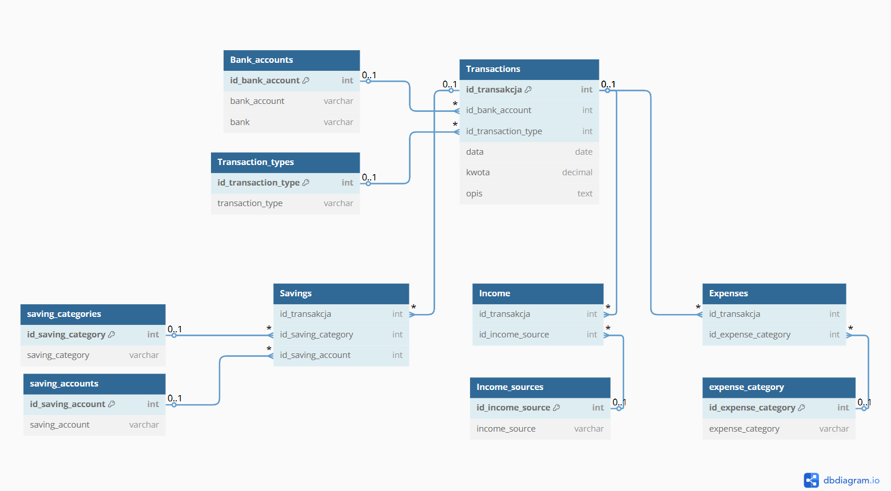

Home Budget Analysis – From Raw Data to Visualization
In today's world, fast and accurate financial data analysis is crucial. In this project, I built a ETL (Extract, Transform, Load) process that transforms raw transaction data into valuable insights in PowerBI.
Project Stages
1. Exporting Data from the Banking System
The process starts with exporting bank transactions to a CSV file. The data source is a banking profile that generates detailed records of all financial operations.
2. Data Cleaning and Transformation in Power Query (Excel)
Raw data often contains errors, duplicates, and unnecessary information. In Power Query, I perform:
- Removing duplicates and empty records
- Standardizing date formats and numerical values
- Categorizing transaction types (e.g., income, expenses, fees)
3. Importing Data into SQL Server and populating the Database Model
Next, I import the Excel data into an SQL Server table using Python script, allowing for structured storage and further analysis.
Using a stored procedure, I automate the process of populating the transaction database model. This step:
- Maps data to the appropriate tables,
- Links transactions with their respective categories,
- Aggregates key financial indicators.
physical data model:
4. Data Visualization in Power BI
The final step is creating an interactive dashboard in Power BI.
This dashboard is useful for decision-making regarding private finanses, helping to optimize spending and manage your budget.
- Line chart: Helps track spending trends over time and detect anomalies or seasonal effects.
- Scatter plot: Shows the relationship between transaction volume and total spending, identifying high-cost vs. high-frequency categories.
- Bar chart: Provides a clear comparison of spending across major categories.
- Table with conditional formatting: Allows for detailed analysis of individual spending categories.